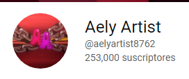
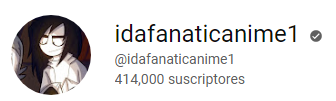

AELYARTIST:
aun recuerdo como si fuera ayer que me aparecio en recomendacion su video animactic con una cancion del popular juego de terror five nights at freddy's ella no solo
me monstro lo que hoy es una franquicia de juegos de terror si no que gracias a ella, cree historia y personajes que al inicio fueron copias de los personajes de ella pero que he ido cambiandolos hasta tenerles historia propia hecha por mi
lamentablemente su canal esta cerrado aun existe y ella esta activa en otra red social realizando comisiones esta artista es una parte de mi infacia que a veces deseo vivir nuevamente
 adriana acuña:
esta artista la conocí gracias a un video de fnaf de las canciones igual que con la artista anterior ella me ayudo a mejorar y de crear historias poco a poco propias y fue ella
que al responder una pregunta de un seguidor me enseño la existencia de la serie que marcaria toda mi vida con sus personajes que me encariñe tanto sobre todo de uno ella siguie activa en you tube
estoy tan agradecida de a verla conocido
adriana acuña:
esta artista la conocí gracias a un video de fnaf de las canciones igual que con la artista anterior ella me ayudo a mejorar y de crear historias poco a poco propias y fue ella
que al responder una pregunta de un seguidor me enseño la existencia de la serie que marcaria toda mi vida con sus personajes que me encariñe tanto sobre todo de uno ella siguie activa en you tube
estoy tan agradecida de a verla conocido
ida ymobox 87:
las conoci en el 2015 asi como las artistas anteriores ellasson hermanas cada una con su contenido distinto aunque de mobox no he encontrado actividad nueva gracias a ella nacio un personaje que amo mucho llamada ori basada en el personaje renata de mobox ,solo de ida que tiene tik tok ahí la volvi a encontrar y las dos al principio tenia un estilo muy simple pero cada una fue mejorado con el tiempo ida sus
dibujos iniciales era hechos en paint igual que los de mobox cada una de estas artistas tiene un lugar especial en mi corazon ellas fueron mi infancia